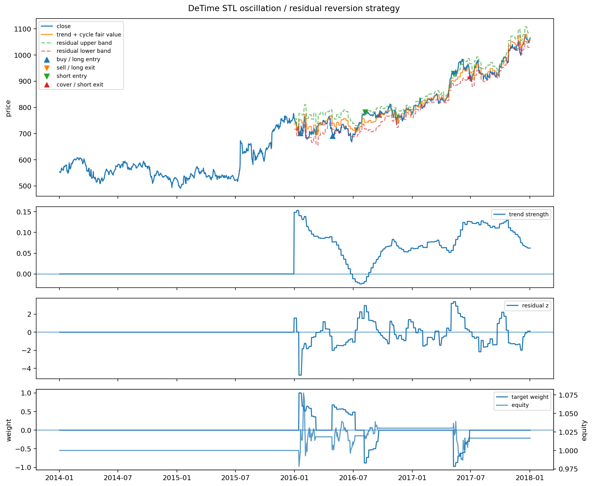

Strategy Lab 02 - Oscillation / residual-reversion strategy
Executed tutorial notebook. This page is generated from
examples/notebooks/quant_trading/02_detime_oscillation_reversion_strategy_lab.ipynb and includes markdown cells, code cells, stdout, tables, and captured figures from the committed notebook.
Tutorial Navigation
| Track | Tutorial notebook |
|---|---|
| Roadmap | Tutorial 00 - Roadmap |
| Strategy Lab | 01 Trend-Following Lab |
| Tutorial Sequence | 01 Real Market Data and Feature Factory |
| Tutorial Sequence | 02 Decomposition-aware MA and MACD |
| Strategy Lab | 02 Oscillation-Reversion Lab |
| Strategy Expansion | 03 Method-Specific Variants |
| Tutorial Sequence | 03 Residual Mean Reversion |
| Strategy Expansion | 04 Component Pair Trading |
| Tutorial Sequence | 04 Donchian Breakout |
| Tutorial Sequence | 05 Pair-Spread Stat-Arb |
| Tutorial Sequence | 06 Cross-Sectional Rotation |
| Native SSA Replay | 07 Native SSA High-Return / Low-Drawdown |
Executed Notebook
这篇只做震荡恢复。假设最近窗口里趋势不强，价格主要围绕 trend + cycle 波动。
策略逻辑：
- 先用
abs(trend_strength)判断是否是弱趋势/震荡环境。 fair value = exp(trend + cycle)。residual_z < -entry_z：价格低于当前趋势+周期结构，做多或买入。residual_z > entry_z：价格高于当前趋势+周期结构，卖出或做空。- 回到
residual_z ≈ 0附近退出。 - 信号在第 t 根 bar 结束后生成，回测用下一根 bar 的开盘价成交。
In [1]
from pathlib import Path
import pandas as pd
from IPython.display import Image, display
from quant_trading.data import load_sample_goog_ohlcv
from quant_trading.decomposition_features import walkforward_price_volume_features
from quant_trading.strategy_lab import (
TrendFollowingConfig,
OscillationReversionConfig,
backtest_signal_set,
execution_price_panel,
decomposition_trend_following_signals,
decomposition_oscillation_reversion_signals,
plot_signal_analysis,
stats_table,
)
from quant_trading.strategy_baselines import (
buy_and_hold_weights,
dual_moving_average_weights,
bollinger_mean_reversion_weights,
)
from quant_trading.strategy_lab import backtest_target_weights_next_bar
CHART_DIR = Path("examples/quant_trading/reports/strategy_lab/charts")
In [2]
ohlcv = load_sample_goog_ohlcv(trim_start="2014-01-01")
symbol = "GOOG"
close = ohlcv["Close"].rename(symbol).to_frame()
volume = ohlcv["Volume"].rename(symbol).to_frame()
execution_prices = execution_price_panel(ohlcv, field="Open", next_bar=True)
execution_prices.columns = [symbol]
features = walkforward_price_volume_features(
close, volume, method="STL", period=126, train_window=504, step=5, z_window=63
)
In [3]
signal = decomposition_oscillation_reversion_signals(
close,
features,
config=OscillationReversionConfig(
entry_residual_z=1.75,
exit_residual_z=0.15,
max_abs_trend_strength=0.35,
require_cycle_turn=True,
allow_short=True,
),
name="detime_STL_oscillation_reversion",
)
bt = backtest_signal_set(
close, signal, execution_prices=execution_prices, fee_bps=5, slippage_bps=2, periods_per_year=252
)
baselines = {
"buy_hold": buy_and_hold_weights(close),
"classic_bollinger_20_2": bollinger_mean_reversion_weights(close, window=20, entry_z=2.0, allow_short=True),
}
results = {signal.name: bt}
for name, weights in baselines.items():
results[name] = backtest_target_weights_next_bar(
close, weights, execution_prices=execution_prices, fee_bps=5, slippage_bps=2, periods_per_year=252, name=name
)
stats_table(results)
text/html
| strategy | total_return | cagr | sharpe | max_drawdown | calmar | volatility | hit_rate | trade_win_rate | average_trade_directional_return | orders | round_trips | median_bars_held | average_turnover | average_gross_exposure | fee_bps | slippage_bps | periods_per_year | execution_model | |
|---|---|---|---|---|---|---|---|---|---|---|---|---|---|---|---|---|---|---|---|
| 1 | buy_hold | 0.887479 | 0.172116 | 0.799165 | -0.192787 | 0.892778 | 0.232171 | 0.524802 | NaN | NaN | 1.0 | 0.0 | NaN | 0.000000 | 1.000000 | 5.0 | 2.0 | 252.0 | signal_on_bar_t_fill_next_bar_open_or_proxy |
| 2 | classic_bollinger_20_2 | 0.323543 | 0.072592 | 0.478267 | -0.207060 | 0.350584 | 0.181238 | 0.255952 | 0.725 | 0.009610 | 79.0 | 40.0 | 9.5 | 0.080357 | 0.490079 | 5.0 | 2.0 | 252.0 | signal_on_bar_t_fill_next_bar_open_or_proxy |
| 0 | detime_STL_oscillation_reversion | 0.016656 | 0.004138 | 0.106633 | -0.084416 | 0.049021 | 0.050825 | 0.068452 | 0.500 | 0.002918 | 34.0 | 4.0 | 35.0 | 0.007432 | 0.086108 | 5.0 | 2.0 | 252.0 | signal_on_bar_t_fill_next_bar_open_or_proxy |
In [4]
# residual_z is the actual traded deviation. Negative values mean price is below trend+cycle.
pd.concat({
"close": close[symbol],
"fair_value": signal.diagnostics["fair_value"][symbol],
"residual_z": signal.diagnostics["residual_z"][symbol],
"weak_trend_regime": signal.diagnostics["weak_trend_regime"][symbol],
"target_weight": signal.target_weights[symbol],
}, axis=1).tail(12)
text/html
| close | fair_value | residual_z | weak_trend_regime | target_weight | |
|---|---|---|---|---|---|
| Date | |||||
| 2017-12-14 | 1049.150024 | 1050.138575 | -0.490728 | 1.0 | 0.0 |
| 2017-12-15 | 1064.189941 | 1050.138575 | -0.490728 | 1.0 | 0.0 |
| 2017-12-18 | 1077.140015 | 1079.191409 | -0.081402 | 1.0 | 0.0 |
| 2017-12-19 | 1070.680054 | 1079.191409 | -0.081402 | 1.0 | 0.0 |
| 2017-12-20 | 1064.949951 | 1079.191409 | -0.081402 | 1.0 | 0.0 |
| 2017-12-21 | 1063.630005 | 1079.191409 | -0.081402 | 1.0 | 0.0 |
| 2017-12-22 | 1060.119995 | 1079.191409 | -0.081402 | 1.0 | 0.0 |
| 2017-12-26 | 1056.739990 | 1056.350459 | 0.110912 | 1.0 | 0.0 |
| 2017-12-27 | 1049.369995 | 1056.350459 | 0.110912 | 1.0 | 0.0 |
| 2017-12-28 | 1048.140015 | 1056.350459 | 0.110912 | 1.0 | 0.0 |
| 2017-12-29 | 1046.400024 | 1056.350459 | 0.110912 | 1.0 | 0.0 |
| 2018-01-02 | 1065.000000 | 1056.350459 | 0.110912 | 1.0 | 0.0 |
In [5]
bt.orders.tail(12)
text/html
| asset | signal_date | fill_date | action | previous_weight | new_weight | delta_weight | fill_price | |
|---|---|---|---|---|---|---|---|---|
| 22 | GOOG | 2016-08-26 | 2016-08-29 | buy | -0.532380 | -0.526531 | 0.005849 | 768.739990 |
| 23 | GOOG | 2016-09-02 | 2016-09-06 | buy | -0.526531 | -0.499074 | 0.027457 | 773.450012 |
| 24 | GOOG | 2016-09-12 | 2016-09-13 | buy | -0.499074 | -0.306797 | 0.192277 | 764.479980 |
| 25 | GOOG | 2016-09-19 | 2016-09-20 | cover | -0.306797 | 0.000000 | 0.306797 | 769.000000 |
| 26 | GOOG | 2017-05-09 | 2017-05-10 | sell_or_short | 0.000000 | -0.973866 | -0.973866 | 931.979980 |
| 27 | GOOG | 2017-05-16 | 2017-05-17 | buy | -0.973866 | -0.869595 | 0.104270 | 935.669983 |
| 28 | GOOG | 2017-05-23 | 2017-05-24 | buy | -0.869595 | -0.697748 | 0.171847 | 952.979980 |
| 29 | GOOG | 2017-05-31 | 2017-06-01 | buy | -0.697748 | -0.619100 | 0.078648 | 968.950012 |
| 30 | GOOG | 2017-06-07 | 2017-06-08 | buy | -0.619100 | -0.599630 | 0.019471 | 982.349976 |
| 31 | GOOG | 2017-06-14 | 2017-06-15 | buy | -0.599630 | -0.337253 | 0.262377 | 933.969971 |
| 32 | GOOG | 2017-06-21 | 2017-06-22 | buy | -0.337253 | -0.303001 | 0.034252 | 958.700012 |
| 33 | GOOG | 2017-06-28 | 2017-06-29 | cover | -0.303001 | 0.000000 | 0.303001 | 929.919983 |
In [6]
bt.trades.tail(12)
text/html
| asset | side | entry_signal_date | entry_fill_date | exit_signal_date | exit_fill_date | entry_price | exit_price | bars_held | entry_weight | directional_return | approx_weighted_return_after_cost | |
|---|---|---|---|---|---|---|---|---|---|---|---|---|
| 0 | GOOG | long | 2016-01-15 | 2016-01-19 | 2016-03-08 | 2016-03-09 | 703.299988 | 698.469971 | 35 | 1.000000 | -0.006868 | -0.007568 |
| 1 | GOOG | long | 2016-04-27 | 2016-04-28 | 2016-07-08 | 2016-07-11 | 708.260010 | 708.049988 | 50 | 0.679060 | -0.000297 | -0.000677 |
| 2 | GOOG | short | 2016-08-05 | 2016-08-08 | 2016-09-19 | 2016-09-20 | 782.000000 | 769.000000 | 30 | -0.881256 | 0.016624 | 0.014033 |
| 3 | GOOG | short | 2017-05-09 | 2017-05-10 | 2017-06-28 | 2017-06-29 | 931.979980 | 929.919983 | 35 | -0.973866 | 0.002210 | 0.001471 |
In [7]
out = CHART_DIR / "notebook_02_oscillation_reversion.png"
plot_signal_analysis(ohlcv, signal, bt, asset=symbol, output_path=out, title="DeTime STL oscillation / residual reversion strategy")
display(Image(filename=str(out)))
out.as_posix()
image/png

text/plain
'examples/quant_trading/reports/strategy_lab/charts/notebook_02_oscillation_reversion.png'